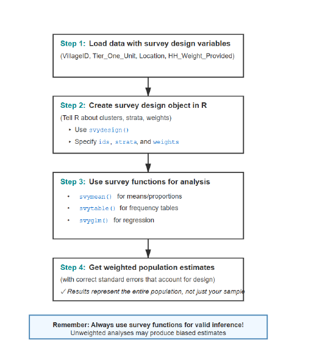

Chapter 6 Survey Design, Sampling, and Weighting
Household surveys such as PAL Network’s ICAN-ICAR study estimate population learning outcomes from a sample. The sampling design determines which households enter the data, and the survey design variables (weights, strata, and clusters) determine how analysts should estimate population quantities and uncertainty. After this chapter, you should be able to explain probability sampling, describe the ICAN-ICAR multi-stage design, interpret a survey weight, and compute design-correct estimates in R.
#| echo: true
#| warning: false
#| message: false
# load packages
library(tidyverse)
library(survey)
library(knitr)
# load the data
dat = read_csv("data/ican-icar-2025-v1.csv")6.1 Survey sampling and design
A census measures every household in the population. ICAN-ICAR survey data instead uses a probability sample because a census is rarely feasible at national scale. Probability sampling supports population inference because the design assigns each unit a known (or estimable) selection probability.
ICAN-ICAR survey data uses a stratified, multi-stage cluster design.@fig-pal-sampling-process illustrates the logic.

Figure 6.1: Illustration of the ICAN-ICAR multi-stage sampling process.
Stage 1 (select clusters). The survey defines primary sampling units (PSUs) such as enumeration areas, villages, or urban blocks. Within strata (for example, region-by-urban/rural categories), the design selects PSUs using probability proportional to size (PPS) so that larger PSUs have a higher chance of selection.
Stage 2 (select households). Within each selected PSU, the field team selects a fixed number of households using a standardized selection procedure (for example, systematic selection from a listing). This second stage produces the household sample used for data collection.
This design shapes analysis in two ways. First, learners within the same PSU tend to resemble one another, which increases uncertainty relative to a simple random sample of the same size. Second, stratification often improves precision because the sample covers key sub-populations more evenly.
6.2 Survey weights and design-based inference
A survey weight approximates how many population units a sampled unit represents. In its simplest form, the design weight equals the inverse of the selection probability. If a household had a 1 in 500 chance of selection, its basic weight would be 500. In other words, that household represents 500 households in the population.The ICAN-ICAR survey data includes a household weight variable, HH_Weight_Provided, which can be used for population estimate.
To compensate for households that were selected but did not respond (or were missed), the weights are adjusted so that responding households “stand in” for similar households that did not respond. This may also involve post-stratification — adjusting weights so that certain known totals (e.g. population by region, or by urban/rural) align with census figures. These adjustments reduce bias from non-response and any sampling frame imperfections.
Ignoring survey weights or clustering can make your analysis misrepresent both the population estimate and its uncertainty. If selection probabilities vary, unweighted summaries describe the sample rather than the population, whereas weighting targets the population by rebalancing each observation’s contribution. Clustering also induces correlation within PSUs, thus treating the data as a random sample typically understates standard errors and produces confidence intervals that are too narrow. Survey-aware methods incorporates the design to estimate uncertainty correctly.
The svydesign() from the survey package represents the sampling design through a design object. After you create that object, you pass it to survey-aware estimators such as svymean() and svyglm(). In multi-country analysis, cluster and strata identifiers can repeat across countries. The safest approach is to use interaction() so that identifiers become unique across the pooled data.
options(
survey.lonely.psu = "adjust",
survey.adjust.domain.lonely = TRUE
)
des = svydesign(
ids = ~interaction(CountryName, VillageID) + HHID,
strata = ~interaction(CountryName, TierOneUnit),
weights = ~HHWeightProvided,
data = dat,
nest = TRUE
)Let’s break down each component:
1. ids = ~interaction(CountryName, VillageID) + HHID
This specifies the two-stage cluster structure:
- Stage 1: EAs/Villages (identified uniquely by
interaction(CountryName, VillageID)) - Stage 2: Households within EAs (identified by
HHID)
We use interaction() to create unique EA identifiers across countries, since the same VillageID might exist in multiple countries. The + indicates nested stages (households within EAs)
2. strata = ~interaction(CountryName, TierOneUnit)
Stratification variables are the geographic regions within each country. Tier_One_Unit represents the first-level administrative division (provinces, districts, etc.). We interact this with CountryName to treat each country as its own separate stratification system. This ensures that sampling variability is calculated correctly within each country’s design
3. weights = ~HHWeightProvided
This is the final household weight variable provided in the data. Already incorporates all necessary adjustments (selection probabilities, non-response, post-stratification)
4. nest = TRUE
This is essential when cluster IDs are only unique within strata. It tells R that VillageID values can repeat across different strata/countries, and prevents R from treating EAs with the same ID in different countries as the same cluster.
The example below compares an unweighted and weighted estimate of the proportion of enrolled learners who meet minimum proficiency in both maths and reading in Kenya.
# filter to enrolled learners in Kenya
one_country = dat |>
filter(CountryName == "Kenya" & EnrolmentStatus == "Currently Enrolled")
# unweighted (sample) estimate
prop_unweighted = mean(one_country$MPLBoth, na.rm = TRUE)
prop_unweighted## [1] 0.422691373025516403672# weighted estimate with design-correct SE
options(
survey.lonely.psu = "adjust",
survey.adjust.domain.lonely = TRUE
)
des_one = svydesign(
ids = ~interaction(CountryName, VillageID) + HHID,
strata = ~interaction(CountryName, TierOneUnit),
weights = ~HHWeightProvided,
data = one_country,
nest = TRUE
)
prop_weighted = svymean(~MPLBoth, design = des_one, na.rm = TRUE)
prop_weighted## mean SE
## MPLBoth 0.42719509808074407342 0.014550000000000000433@fig-pal-analysis-workflow summarizes a practical workflow that you can reuse for descriptive statistics and modelling.

Figure 6.2: A practical workflow for analysing ICAN-ICAR survey data in R.
After you define des, these are the common survey-aware functions:
svymean()for weighted means and proportions,svytotal()for weighted totals,svyby()for subgroup estimates, andsvyglm()for regression models with design-correct standard errors.
6.3 Practice exercises
- Change the country filter in the example and compare unweighted and weighted MPL estimates.
- Estimate the weighted proportion meeting MPL in maths (
MPL_math) and compare it with the unweighted proportion. - Within one country, use
svyby()to estimate MPL byLocation(urban/rural) for enrolled learners.